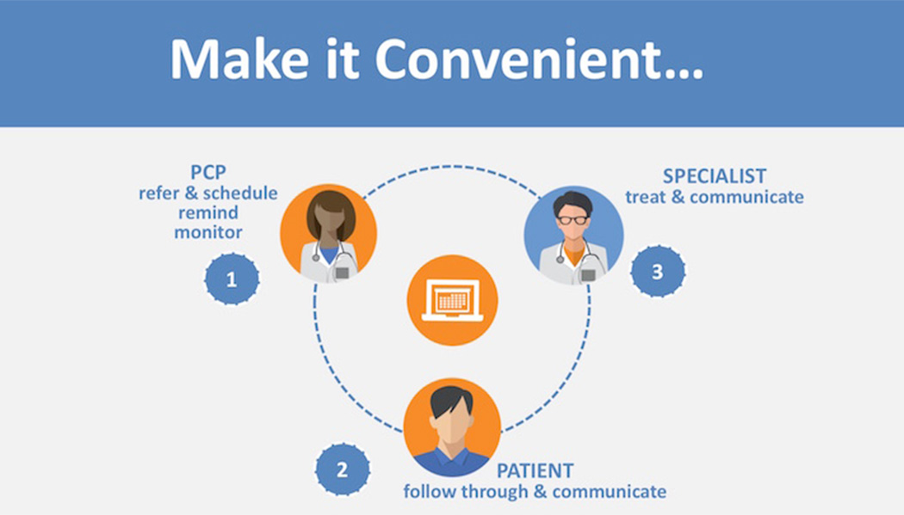
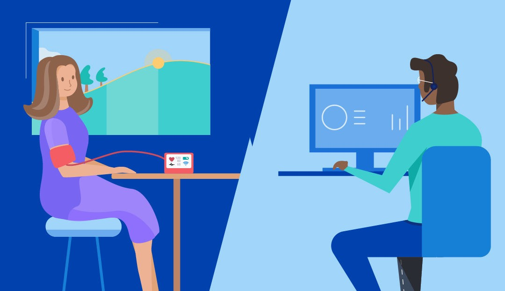
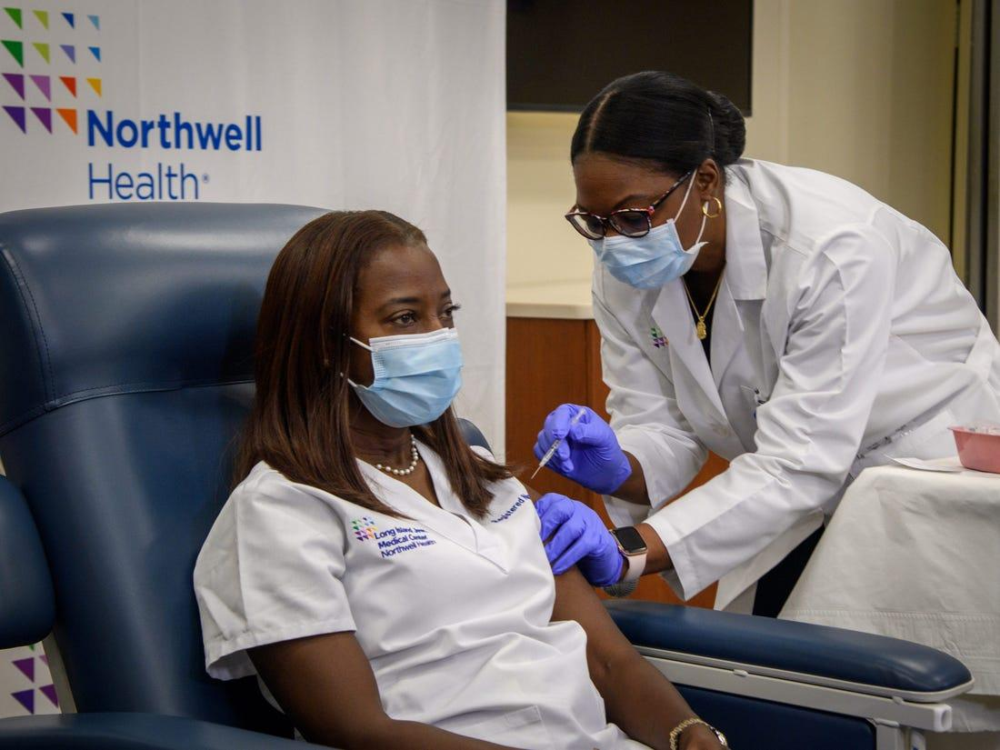
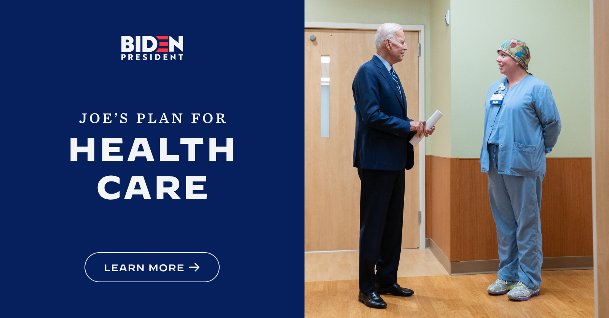

CCN General Medicine offers a comprehensive range of medical specializations for both chronic and acute conditions. It participates in the Health Home Program management....
Large Community Hospital is the largest voluntary, not-for-profit health and teaching hospital system serving the South and....
CCN General Medicine offers a comprehensive range of medical specializations for both chronic and acute conditions. It participates in the Health Home Program management by NYC CMA (Care Management Agency). Health Home program run by CMS is one of the most complicated outreach programs designed to address mental health patients with 1 or more chronic conditions. The program is delivered by a lead community agency, namely ‘Lead Health Home’ and CMAs.
Large Community Hospital is the largest voluntary, not-for-profit health and teaching hospital system serving the South and Central Bronx. It is also among the largest providers of outpatient services in New York City, with more than one million visits annually and an ER that is responding to 139,000 visits, one of the busiest in New York. Large Community Hospital is now completing the third year as a Performing Provider System (PPS) lead in New York State’s Delivery System Reform Incentive Payment (DSRIP) Program. The DSRIP program (entitled Bronx Health Access) is providing Large Community Hospital and its community partners with the opportunity to adapt to a value-based payment system, with an emphasis on keeping patients and the community healthy. Large Community Hospital’s DSRIP Performance is also in the top six of all Performing Provider Systems in New York State.
Value based care is complex process. A true care model requires collaboration from every participating entity. Equipo integrates the whole care delivery system to help achieve value-based care model. New York City IPA practice leaders realized payment reform was a reality; they needed transformation into a new model of care.
Traditional care requires in-person visits. In contrast, remote monitoring programs passively and continuously collect
and transmit patient-generated health data (PGHD) from in-home medical devices to providers and care teams. PGHD, when
compared to health data collected exclusively during in-person doctor’s visits, more accurately and holistically
reflects lifestyle choices, health history, symptoms, medication, treatment information, and biometric data such as
heart rate, blood glucose, blood pressure, temperature, oxygen levels, and weight. As a result, provider organizations
are adopting remote patient monitoring (RPM) services – inclusive of data from home health devices – as a new standard
of care.
St Anthony Home Health – a leading healthcare provider in South Texas manages a patient population that have chronic
conditions like Diabetes and Hypertension. Its providers can now have actionable information gleaned from the data
presented via the Equipo Platform. Equipo identifies data trends, elevate critical data points, and help aggregate,
summarize, and visualize PGHD in meaningful ways. It allows both patients and providers to easily share, view, and act
upon the insights. This makes PGHD useful at the point of care, while encouraging health professionals of St Anthony’s
to embrace the available data and further benefit its patients.
For many of St Anthony’s patients, healthcare is episodic. They are treated for the issues that are discussed in
in-person doctor’s visits and their providers base treatments around the data collected at that time. It implies that
once they leave after receiving treatment for an acute health event, they are largely disconnected from their provider
and the continuing care they may need. In contrast, RPM improves outcomes in post-acute care by helping patients and
providers manage short-term care after in-person treatment with remotely collected data. Programs educate patients on
their condition and recovery needs while providing regular reminders, early interventions, post-discharge information,
or medication adherence tracking. With the information garnered from PGHD, St Anthony’s providers are able to evaluate
the effectiveness of treatments and customize care plans between patient visits.
Routine monitoring allows for intervention and education as early and as often as needed to keep the patient engaged,
healthy, and adherent to their treatment programs. By continuously tracking the routine and biometric measurements of
people with chronic conditions, providers are empowered to intervene earlier in disease progression, which helps prevent
complications that can result in unnecessary in-person or hospital visits. Equipo simplifies these interventions so that
they can be executed by a physician assistant; by a nurse or care manager. It empowers a care team with technology to
more effectively intervene and manage treatments.


 285 Durham Ave
285 Durham Ave  info@equipohealth.com
info@equipohealth.com
 800.482.9082
800.482.9082